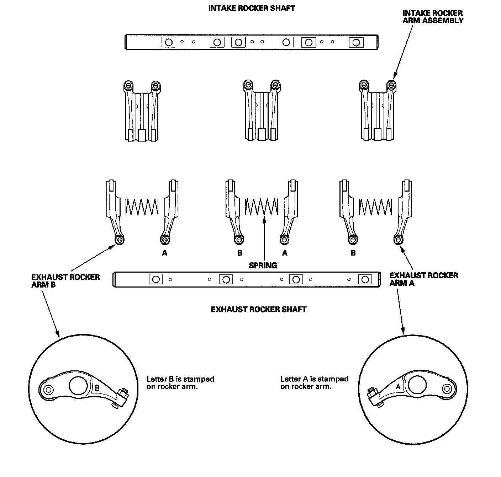

Rocker Arm and Shaft Disassembly/Reassembly
Rocker Arm and Shaft Disassembly/ReassemblyNOTE:
^ Identify parts as they are removed so they can be reinstalled in their original locations.
^ Inspect the rocker shafts and rocker arms.
^ If reused, the rocker arms must be installed in their original locations.
^ When removing or installing the rocker arm assembly, do not remove the rocker shaft mounting bolts. The bolts will keep the springs and rocker arms on the shaft.
^ Bundle the intake rocker arms with rubber bands to keep them together as a set.
^ Prior to reassembling, clean all the parts in solvent, dry them and apply new engine oil to any contact points.
^ When replacing the intake rocker arm assembly, remove the fastening hardware from the new intake rocker arm assembly.
